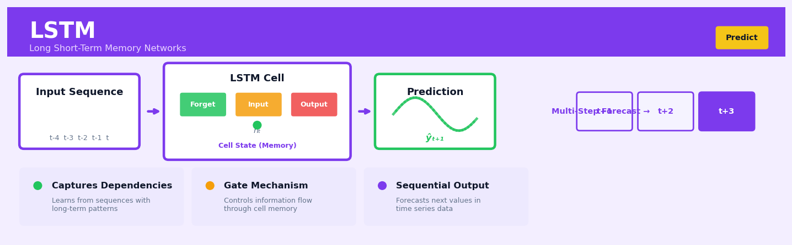

LSTM#


The biggest mistake with LSTMs in production is feeding them unnormalized sequences or sequences with wildly different scales across features, which causes the gates to saturate and kills gradient flow during training. Always normalize your time series inputs to a consistent range like zero to one or standardize them, and if you're doing multi-step forecasting, remember that feeding predictions back as inputs compounds any normalization drift. For financial or demand forecasting where you need interpretable outputs, keep a reverse transform pipeline ready so stakeholders see actual dollar amounts or units, not normalized abstractions.
The 60-Second Version#
What it does: LSTM remembers patterns over long sequences of data—like sales trends across months or sentence meaning across paragraphs—without forgetting what mattered earlier.
When to use it: You have sequential data where what happened many steps ago still influences what happens next, and simpler methods can’t capture those long-range connections.
What you get back: Predictions for the next step in your sequence (next month’s demand, next word in a sentence, next system failure) that account for relevant history, not just recent events.
Difficulty |
Advanced |
Typical runtime |
Minutes to hours on 100K rows (GPU recommended) |
What you bring |
Sequential data ordered by time or position |
What you get |
Forecasts or classifications that remember long-range patterns |
Heuristix bucket |
Predict — Machine Learning & Forecasting |
LSTMs are powerful but hungry: they need substantial data, careful tuning, and computational resources—start with simpler methods unless long-term memory is genuinely critical.
Learning Objectives#
After reading this chapter, a business user will be able to:
Identify business problems where sequential patterns and long-term dependencies matter, such as demand forecasting with seasonal trends, customer churn prediction based on behaviour sequences, or anomaly detection in time-stamped sensor data.
Interpret LSTM forecast outputs including prediction intervals and confidence scores, and explain to stakeholders why the model captures patterns that simpler methods miss.
Decide when to trust LSTM predictions versus flagging cases for human review, based on prediction uncertainty, historical accuracy metrics, and the business cost of errors.
After reading this chapter, a data scientist will be able to:
Implement an LSTM network for time series or sequence prediction tasks, correctly handling data windowing, sequence padding, and stateful versus stateless training modes.
Tune critical hyperparameters including the number of LSTM layers, hidden units per layer, dropout rates, and sequence length, while navigating trade-offs between model capacity, training time, and overfitting risk.
Validate LSTM performance using appropriate metrics for sequential data, diagnose common failure modes such as overfitting to recent patterns or failure to capture regime changes, and compare results against simpler baseline models to justify the added complexity.
Overview#
Long Short-Term Memory (LSTM) networks are a specialised architecture of recurrent neural networks (RNNs) designed to learn long-range dependencies in sequential data. Unlike standard RNNs, which suffer from vanishing and exploding gradient problems, LSTMs employ a gating mechanism that selectively retains or discards information over extended time horizons. LSTMs belong to the family of deep learning methods for sequence modelling and have become foundational tools for time series forecasting, natural language processing, and any domain where temporal or sequential structure carries predictive signal.
When to Use This#
Time series forecasting with long-range dependencies: Use LSTM when your sequence exhibits patterns that span dozens or hundreds of time steps—for example, annual seasonality in daily retail sales data where standard autoregressive models struggle to capture year-over-year effects.
Multivariate sequence modelling: When multiple input features evolve together over time (e.g., sensor readings from multiple instruments), LSTMs can learn complex interactions between variables across the temporal dimension.
Irregularly-spaced or variable-length sequences: LSTMs naturally handle sequences of different lengths within the same training batch, making them suitable for customer journey data where interaction counts vary by customer.
Non-linear temporal dynamics: When the relationship between past values and future outcomes is highly non-linear and cannot be adequately captured by ARIMA, exponential smoothing, or linear state-space models.
Feature-rich forecasting problems: When exogenous variables (promotions, holidays, weather) interact with historical patterns in complex ways, LSTMs can learn these interactions without explicit feature engineering.
Do NOT use when data is limited: LSTMs have many parameters and require substantial training data (typically thousands of sequences). For small datasets, simpler methods like ARIMA or Prophet will generalise better.
Do NOT use when interpretability is paramount: If stakeholders require explicit understanding of which factors drive predictions and by how much, consider gradient boosting on engineered lag features or classical statistical models instead.
Do NOT use for stationary short-memory processes: If autocorrelation dies off within a few lags and the process is well-described by AR(p) models, an LSTM introduces unnecessary complexity.
Do NOT use without proper validation infrastructure: LSTMs require careful hyperparameter tuning and are prone to overfitting; without robust cross-validation pipelines, results may be misleading.
Questions This Answers#
Forecasting Business Performance#
Why do our sales forecasts fall apart after 2-3 weeks, and how can we reliably predict demand 60-90 days out?
Can we predict which customers are likely to churn in the next 6 months based on their usage patterns over the past year?
What will our cash flow look like for the next quarter given our historical payment cycles and seasonal trends?
How much inventory should we stock in each region next month to avoid both stockouts and excess holding costs?
Will this product launch succeed, or should we adjust our rollout timeline based on early engagement signals?
What’s our realistic revenue forecast for Q4 given current pipeline activity, win rates, and deal velocity trends?
Understanding Complex Customer and Operational Patterns#
Why did customer engagement suddenly drop in March, and is it connected to changes we made six months ago?
Which sequence of customer touchpoints—emails, calls, demos—actually leads to closed deals versus dead ends?
Can we spot equipment failures 48 hours before they happen based on sensor readings and maintenance history?
How do pricing changes we made last quarter ripple through customer behavior over the following 3-6 months?
What’s causing the lag between our marketing spend and actual conversions—and how long should we wait to see results?
Optimizing Resource Allocation and Strategy#
Should we staff up our call center next month, or will seasonal call volumes taper off naturally?
Which stores should receive limited product allocations first to maximize total revenue across the chain?
Is it worth investing in customer retention programs now, or will most at-risk accounts stabilize on their own?
How It Works#
Imagine you’re reading a detective novel where clues are scattered across hundreds of pages. A standard reader might forget an early detail by the time it becomes important in chapter 30. But a great detective keeps a notebook, constantly deciding what to write down (“the butler had a key”), what to update (“scratch that—the key was a fake”), and what to forget entirely (“the red herring about the gardener”). An LSTM works exactly like this detective’s notebook: as it reads through a sequence of data—stock prices, sentences, sensor readings—it actively manages a memory, choosing at each step what’s worth remembering, what needs updating, and what can be safely forgotten.
TIME SEQUENCE: Reading stock prices day by day
Input → Day 1 Day 2 Day 3 Day 4
Data: $100 $102 $98 $101
↓ ↓ ↓ ↓
┌──────────────────────────────────┐
│ LSTM CELL (The Detective) │
│ │
│ ┌─────────────────────┐ │
│ │ MEMORY STATE │ │
│ │ "trend=up, vol=low"│ │
│ └─────────────────────┘ │
│ ↑ ↑ ↑ │
│ Forget Update Add New │
│ Gate Gate Gate │
│ │ │ │ │
└─────┼──────┼──────┼──────────────┘
Decides what stays/goes
Output → Prediction: $103 (next day forecast)
Step 1: Receive new information. The LSTM receives the next item in the sequence—say, today’s stock price. It also carries forward two things from the previous step: the “memory state” (important patterns it’s tracking) and the “hidden state” (the working summary it showed to the outside world).
Step 2: Decide what to forget. The “forget gate” looks at the new input and the previous summary, then decides what parts of the old memory are no longer relevant. Maybe yesterday’s short-term spike doesn’t matter anymore. It assigns a “keep score” to each piece of stored information—high scores stay, low scores get erased.
Step 3: Decide what to remember. The “input gate” examines the new information and determines what’s worth adding to memory. Is today’s price change significant? Does it reveal a new trend? This gate filters out noise and only lets meaningful signals through.
Step 4: Update the memory. The LSTM combines the forget and remember decisions to create an updated memory state. It’s like crossing out outdated notes in the detective’s notebook while adding fresh, relevant clues. The memory now reflects everything important from the entire sequence so far.
Step 5: Decide what to output. The “output gate” looks at this updated memory and selects which parts are relevant for making the current prediction. Not everything stored needs to be shared—some information is kept in reserve for future steps. This filtered view becomes both the prediction for this time step and the summary passed to the next step.
The key insight: By explicitly learning what to remember, update, and forget at each step, LSTMs solve the problem that plagued earlier networks—they can connect cause and effect even when separated by hundreds of time steps, making them natural detectives of patterns hidden in long sequences.
The Intuition#
Imagine you are reading a novel and trying to predict what will happen in the final chapter. Some details from the opening pages—the protagonist’s childhood trauma, a cryptic letter mentioned once—turn out to be crucial for understanding the ending. Other details—what the protagonist ate for breakfast in chapter three—are completely irrelevant. A skilled reader learns to carry forward the important information while forgetting the noise.
Standard recurrent neural networks attempt to do this by passing a hidden state from one time step to the next, like a person trying to remember everything by holding it all in working memory simultaneously. This approach fails catastrophically over long sequences because the gradient signal used to train the network either vanishes (becomes negligibly small) or explodes (becomes numerically unstable) as it propagates backwards through time. The network effectively forgets everything beyond a few time steps.
LSTMs solve this problem through an elegant mechanism: a cell state that acts like a conveyor belt running through the entire sequence. Information can be placed onto this conveyor belt, read from it, or removed from it—but by default, information flows along it unchanged. Three gates—the forget gate, input gate, and output gate—control what happens at each time step. The forget gate decides what information to discard from the cell state. The input gate decides what new information to add. The output gate decides what portion of the cell state to expose as the hidden state output. Crucially, these gates are learned from data: the network discovers for itself which information is worth remembering and which should be forgotten.
This gating mechanism creates gradient highways that allow error signals to flow backwards through hundreds of time steps without vanishing. When the forget gate is open (close to 1), gradients pass through nearly unchanged; the network can learn that information from the distant past matters for the current prediction. This architectural innovation—not a change to the learning algorithm itself—is what makes LSTMs effective for long-range sequence modelling.
The Mathematics#
Problem Setup and Notation#
Consider a sequence of input vectors \(\mathbf{x}_1, \mathbf{x}_2, \ldots, \mathbf{x}_T\) where each \(\mathbf{x}_t \in \mathbb{R}^d\) represents the input at time step \(t\). The goal is to produce a sequence of hidden states \(\mathbf{h}_1, \mathbf{h}_2, \ldots, \mathbf{h}_T\) where \(\mathbf{h}_t \in \mathbb{R}^n\) encodes relevant information about the sequence up to time \(t\). For forecasting tasks, we typically use \(\mathbf{h}_T\) (or a sequence of outputs) to predict future values.
An LSTM maintains two state vectors at each time step:
Hidden state \(\mathbf{h}_t \in \mathbb{R}^n\): the output of the LSTM cell, exposed to subsequent layers
Cell state \(\mathbf{c}_t \in \mathbb{R}^n\): the internal memory, protected by the gating mechanism
The LSTM Cell Equations#
At each time step \(t\), the LSTM computes the following quantities. First, define the concatenated input:
Forget Gate: Determines what information to discard from the cell state.
Input Gate: Determines what new information to store in the cell state.
Candidate Cell State: Proposes new values to potentially add to the cell state.
Cell State Update: Combines forgetting old information and adding new information.
Output Gate: Determines what parts of the cell state to output.
Hidden State Output: The final output of the LSTM cell at time \(t\).
Here, \(\sigma(\cdot)\) denotes the sigmoid function \(\sigma(x) = 1/(1 + e^{-x})\), \(\odot\) denotes element-wise (Hadamard) multiplication, and \(\tanh(\cdot)\) is applied element-wise.
Parameter Matrices#
The learnable parameters are:
\(\mathbf{W}_f, \mathbf{W}_i, \mathbf{W}_c, \mathbf{W}_o \in \mathbb{R}^{n \times (n+d)}\): weight matrices for each gate
\(\mathbf{b}_f, \mathbf{b}_i, \mathbf{b}_c, \mathbf{b}_o \in \mathbb{R}^n\): bias vectors for each gate
The total number of parameters in a single LSTM layer is \(4n(n + d) + 4n = 4n(n + d + 1)\).
Assumptions#
Sequential structure is meaningful: The ordering of observations carries predictive information.
Sufficient training data: Deep learning models require substantial data to estimate parameters without overfitting.
Stationarity is not required: Unlike ARIMA, LSTMs can learn non-stationary patterns, though they may struggle with distribution shift.
Fixed input dimensionality: While sequence length can vary, input dimension \(d\) must be constant.
Objective Function and Optimisation#
For a regression forecasting task, the objective is typically mean squared error:
where \(\theta\) represents all learnable parameters, \(N\) is the number of sequences, \(T_i\) is the length of sequence \(i\), and \(\hat{y}_t^{(i)}\) is the model prediction.
Optimisation proceeds via backpropagation through time (BPTT). The key insight enabling LSTM training is the gradient flow through the cell state. Consider:
When \(\mathbf{f}_t \approx 1\), the gradient passes through nearly unchanged, avoiding the vanishing gradient problem.
Relationship to Other Methods#
Vanilla RNN: LSTM reduces to a simplified RNN if \(\mathbf{f}_t = 0\), \(\mathbf{i}_t = 1\), and \(\mathbf{o}_t = 1\) (no gating).
GRU (Gated Recurrent Unit): A simplified architecture combining forget and input gates into an “update gate” with fewer parameters.
Transformer models: Attention mechanisms offer an alternative approach to capturing long-range dependencies without recurrence.
Edge Cases#
Very short sequences (\(T < 10\)): The overhead of LSTM architecture may not provide benefits over simpler models.
Extremely long sequences (\(T > 1000\)): Even LSTMs can struggle; consider truncated BPTT or attention mechanisms.
Highly imbalanced gate initialisations: If forget gate biases initialise too negative, the network may fail to learn long-term dependencies.
Understanding the Mathematics#
The Forget Gate#
Read it aloud: The forget gate value at time t equals a sigmoid function applied to the result of multiplying a weight matrix by the concatenation of the previous hidden state and current input, then adding a bias term.
What each symbol means:
\(f_t\) = forget gate activation (a number between 0 and 1 that decides what to forget)
\(\sigma\) = sigmoid function (squashes any number to a range between 0 and 1)
\(W_f\) = weight matrix for the forget gate (learned parameters that determine importance)
\(h_{t-1}\) = previous hidden state (what the network remembered from the last time step)
\(x_t\) = current input (new data arriving at this time step)
\(b_f\) = bias term (a learned offset that shifts the decision threshold)
Concrete numerical example: A retail forecaster receives today’s sales figure of 150 units (\(x_t = 150\)) and yesterday’s context value was 200 (\(h_{t-1} = 200\)). If \(W_f = 0.002\) and \(b_f = -0.5\), then the weighted sum is \(0.002 \times [200, 150] + (-0.5) = 0.4 - 0.5 = -0.1\). Applying sigmoid gives \(f_t = 0.475\). This means the network will forget about 52% of the old cell state and keep 48%.
Why this equation matters: Without selective forgetting, the LSTM would accumulate irrelevant information from months ago, diluting the signal from recent critical events like a competitor’s price change.
The Input Gate#
Read it aloud: The input gate value at time t equals a sigmoid function applied to a weight matrix multiplied by the previous hidden state and current input, plus a bias.
What each symbol means:
\(i_t\) = input gate activation (decides how much new information to accept)
All other symbols follow the same pattern as the forget gate, but with subscript \(i\) indicating input-specific weights and biases
Concrete numerical example: Using the same retail example, if \(W_i = 0.003\) and \(b_i = 0.2\), then \(0.003 \times [200, 150] + 0.2 = 1.05 + 0.2 = 1.25\). Applying sigmoid gives \(i_t = 0.777\). The network will let in about 78% of the candidate new information.
Why this equation matters: This prevents the network from overreacting to every minor fluctuation—a single outlier sale doesn’t overwhelm the learned pattern of weekly seasonality.
The Candidate Cell State#
Read it aloud: The candidate cell state equals a tanh function applied to a weight matrix multiplied by the previous hidden state and current input, plus a bias.
What each symbol means:
\(\tilde{C}_t\) = candidate values to potentially add to memory (values between -1 and +1)
\(\tanh\) = hyperbolic tangent function (squashes values to between -1 and +1, allowing negative updates)
Concrete numerical example: With \(W_C = 0.004\) and \(b_C = 0\), we get \(0.004 \times [200, 150] + 0 = 1.4\). Applying tanh gives \(\tilde{C}_t = 0.885\). This positive candidate suggests conditions are strengthening (perhaps an upward trend).
Why this equation matters: The tanh’s negative range allows the network to encode “less than before” and “more than before,” not just absolute magnitudes—critical for detecting trend reversals.
The Cell State Update#
Read it aloud: The new cell state equals the forget gate times the old cell state, plus the input gate times the candidate cell state.
What each symbol means:
\(C_t\) = updated long-term memory
\(\times\) = element-wise multiplication (each gate scales its corresponding values)
Concrete numerical example: If the previous cell state was \(C_{t-1} = 300\), then \(C_t = 0.475 \times 300 + 0.777 \times 0.885 = 142.5 + 0.688 = 143.2\). The cell state dropped because the forget gate discarded more than the input gate added—perhaps signaling a weakening trend.
Why this equation matters: This additive update prevents gradients from vanishing during backpropagation, solving the core problem that made standard RNNs fail on long sequences.
The Big Picture#
The mathematics of LSTMs fundamentally achieves selective memory: it learns what to remember, what to forget, and what to output at each moment. This gating approach was chosen because multiplicative gates (multiplying by values near 0 or 1) let gradients flow backward through time without vanishing, unlike the additive operations in standard RNNs that cause exponential decay. Each gate is a learned decision function that adapts to your specific data—whether that’s forgetting yesterday’s anomaly in sales data or remembering a customer’s intent from three sentences ago. The entire architecture boils down to this: an LSTM is a memory cell with three learned valves controlling what flows in, what stays, and what flows out.
Python Implementation#
import numpy as np
import pandas as pd
import matplotlib.pyplot as plt
from sklearn.preprocessing import MinMaxScaler
from sklearn.metrics import mean_squared_error, mean_absolute_error
import tensorflow as tf
from tensorflow.keras.models import Sequential
from tensorflow.keras.layers import LSTM, Dense, Dropout
from tensorflow.keras.callbacks import EarlyStopping
# Set random seeds for reproducibility
np.random.seed(42)
tf.random.set_seed(42)
# =============================================================================
# Generate synthetic time series data with trend, seasonality, and noise
# =============================================================================
n_points = 1500
time = np.arange(n_points)
# Components: trend + weekly seasonality + annual seasonality + noise
trend = 0.02 * time
weekly_seasonality = 10 * np.sin(2 * np.pi * time / 7)
annual_seasonality = 30 * np.sin(2 * np.pi * time / 365)
noise = np.random.normal(0, 5, n_points)
# Combine into final series
series = 100 + trend + weekly_seasonality + annual_seasonality + noise
# Create DataFrame
df = pd.DataFrame({'value': series}, index=pd.date_range('2020-01-01', periods=n_points, freq='D'))
print(f"Dataset shape: {df.shape}")
print(df.head())
# =============================================================================
# Prepare data for LSTM: create sequences
# =============================================================================
def create_sequences(data, lookback, horizon=1):
"""
Create input sequences and corresponding targets.
Parameters:
-----------
data : np.array
Scaled time series values
lookback : int
Number of past time steps to use as input
horizon : int
Number of future steps to predict
Returns:
--------
X : np.array of shape (n_samples, lookback, n_features)
y : np.array of shape (n_samples, horizon)
"""
X, y = [], []
for i in range(len(data) - lookback - horizon + 1):
X.append(data[i:(i + lookback)])
y.append(data[(i + lookback):(i + lookback + horizon)])
return np.array(X), np.array(y)
# Scale data to [0, 1] range - critical for LSTM convergence
scaler = MinMaxScaler(feature_range=(0, 1))
scaled_data = scaler.fit_transform(df[['value']].values)
# Define sequence parameters
LOOKBACK = 60 # Use 60 days of history
HORIZON = 7 # Predict 7 days ahead
# Create sequences
X, y = create_sequences(scaled_data, LOOKBACK, HORIZON)
print(f"Sequences created - X shape: {X.shape}, y shape: {y.shape}")
# Train/validation/test split (60/20/20)
train_size = int(len(X) * 0.6)
val_size = int(len(X) * 0.2)
X_train, y_train = X[:train_size], y[:train_size]
X_val, y_val = X[train_size:train_size+val_size], y[train_size:train_size+val_size]
X_test, y_test = X[train_size+val_size:], y[train_size+val_size:]
print(f"Train: {X_train.shape}, Val: {X_val.shape}, Test: {X_test.shape}")
# =============================================================================
# Build LSTM Model
# =============================================================================
def build_lstm_model(lookback, n_features, horizon, units=50, dropout_rate=0.2):
"""
Build a stacked LSTM model for multi-step forecasting.
Parameters:
-----------
lookback : int
Input sequence length
n_features : int
Number of input features per time step
horizon : int
Number of output steps to predict
units : int
Number of LSTM units per layer
dropout_rate : float
Dropout rate for regularisation
"""
model = Sequential([
# First LSTM layer - return sequences for stacking
LSTM(units, return_sequences=True, input_shape=(lookback, n_features)),
Dropout(dropout_rate),
# Second LSTM layer
LSTM(units, return_sequences=False),
Dropout(dropout_rate),
# Dense output layer
Dense(horizon)
])
model.compile(
optimizer=tf.keras.optimizers.Adam(learning_rate=0.001),
loss='mse',
metrics=['mae']
)
return model
# Build model
model = build_lstm_model(
lookback=LOOKBACK,
n_features=1,
horizon=HORIZON,
units=64,
dropout_rate=0.2
)
model.summary()
# =============================================================================
# Train the Model
# =============================================================================
# Early stopping to prevent overfitting
early_stopping = EarlyStopping(
monitor='val_loss',
patience=10,
restore_best_weights=True,
verbose=1
)
# Train
history = model.fit(
X_train, y_train,
epochs=100,
batch_size=32,
validation_data=(X_val, y_val),
callbacks=[early_stopping],
verbose=1
)
# =============================================================================
# Evaluate and Interpret Results
# =============================================================================
# Generate predictions on test set
y_pred_scaled = model.predict(X_test)
# Inverse transform to original scale
y_test_original = scaler.inverse_transform(y_test.reshape(-1, 1)).reshape(y_test.shape)
y_pred_original = scaler.inverse_transform(y_pred_scaled.reshape(-1, 1)).reshape(y_pred_scaled.shape)
# Calculate metrics for each forecast horizon
print("\n" +
## Visualisations


## Using This in Heuristix
### What Data You'll Need
The LSTM node expects time series data in **long format** with at least a timestamp column and one or more feature columns. Your dataset should be sorted chronologically before connecting it to this node.
**Required columns:**
- **Datetime column**: Any date or datetime format (e.g., '2024-01-15', '2024-01-15 14:30:00')
- **Target column**: The numeric variable you want to forecast
- **Feature columns** (optional): Additional numeric predictors that might help explain your target
**Example input data:**
| date | sales | temperature | is_weekend |
|------------|-------|-------------|------------|
| 2024-01-01 | 245 | 12.3 | 0 |
| 2024-01-02 | 198 | 11.8 | 0 |
| 2024-01-03 | 312 | 13.1 | 1 |
The node automatically handles the reshaping into sequences internally—you don't need to pre-structure your data into time windows.
### Configuration Parameters
| Parameter | What It Controls | Default | When to Adjust |
|-----------|------------------|---------|----------------|
| **Target Column** | Which column to forecast | (required) | Select your outcome variable |
| **Datetime Column** | Your time index | (required) | Choose your date/timestamp field |
| **Lookback Window** | How many past timesteps to use as input | 12 | Increase for patterns over longer horizons (e.g., 24 for daily data with monthly seasonality) |
| **Forecast Horizon** | How many steps ahead to predict | 1 | Set to match your business need (7 for week-ahead forecasting) |
| **LSTM Units** | Network capacity—neurons in the LSTM layer | 50 | Increase (to 100–200) for complex patterns; decrease (to 20–30) to prevent overfitting on small datasets |
| **Epochs** | Training iterations | 50 | Increase if validation loss still decreasing; decrease if model converges quickly |
| **Batch Size** | Training examples per update | 32 | Larger (64–128) for stability on big datasets; smaller (16) when data is limited |
| **Train/Test Split** | Percentage held out for validation | 0.2 | Keep temporal integrity—Heuristix splits at a time boundary, not randomly |
### What You'll Get Back
**Output columns added to your data:**
- `predicted_[target]`: The LSTM's forecasted values
- `residual`: Actual minus predicted (where actuals exist)
- `confidence_lower` and `confidence_upper`: Forecast interval bounds (if enabled)
**Performance metrics displayed:**
- **RMSE** (Root Mean Squared Error): Average prediction error in original units
- **MAE** (Mean Absolute Error): More robust to outliers than RMSE
- **MAPE** (Mean Absolute Percentage Error): Error as a percentage—useful for comparing across scales
**Visualizations:**
- **Forecast vs Actual plot**: Time series overlay showing predictions against ground truth
- **Residual plot**: Helps identify remaining patterns the model missed
- **Loss curves**: Training and validation loss over epochs—watch for overfitting
### Connecting Downstream
**Common next steps:**
- **Evaluate Model node**: For detailed performance breakdowns and error analysis
- **Export node**: To push forecasts to a database or dashboard
- **Ensemble node**: Combine LSTM with ARIMA or Prophet for more robust predictions
- **What-If Scenario node**: Test how forecasts change with different feature values
### Quick Start
1. **Connect your time series data** to the LSTM node (ensure it's sorted by date)
2. **Select your target column** (e.g., 'sales') and datetime column
3. **Set lookback window** to match your domain intuition (12 for monthly data, 24 for hourly)
4. **Run with defaults** first—50 units, 50 epochs is a solid starting point
5. **Check the loss curves**: If validation loss plateaus early, reduce epochs; if it's still dropping, increase them
6. **Evaluate residuals**: Look for patterns—if you see clear structure, add more LSTM units or features
### Pro Tips
**Start simple, then scale**: Begin with a single LSTM layer and 50 units. Only add complexity if residuals show clear patterns.
**Mind your sequence length**: If lookback = 24 but you only have 100 rows, you're training on ~76 sequences. LSTMs need hundreds of sequences to learn well.
**Normalize features externally**: Connect a Scaling node upstream—LSTMs train faster when features are on similar scales.
**Don't chase perfect training loss**: If training loss drops to near-zero but validation loss stays high, you're overfitting. Reduce units or add dropout (via advanced settings).
**Use validation strategically**: The automatic split respects time order, but if you have strong seasonality, ensure both splits include full seasonal cycles.
## Config Recipes
### Recipe 1: Quick Exploration
**When to use:** Initial prototyping on a new time series dataset where you need fast feedback on whether LSTM architecture is worth pursuing.
**Settings:**
| Parameter | Value | Why |
|-----------|-------|-----|
| `units` | 50 | Small enough for rapid iteration, large enough to capture basic patterns |
| `layers` | 1 | Single layer minimizes training time |
| `batch_size` | 32 | Standard size that fits most GPU memory |
| `epochs` | 20 | Just enough to see learning trajectory without overfitting |
| `dropout` | 0.0 | Skip regularization to see raw model capacity |
| `optimizer` | Adam, lr=0.001 | Default learning rate, adaptive step sizing |
| `lookback_window` | 10 | Minimal temporal context for quick tests |
**What you get:** A baseline model trained in minutes that reveals whether temporal dependencies exist and are learnable.
**Trade-off:** High risk of overfitting and poor generalization; this is a throwaway model for decision-making, not deployment.
---
### Recipe 2: Production-Grade Forecasting
**When to use:** Deploying an LSTM for business-critical forecasting where accuracy and stability matter more than training speed.
**Settings:**
| Parameter | Value | Why |
|-----------|-------|-----|
| `units` | 128, 64 | Two-layer architecture with decreasing width for hierarchical features |
| `layers` | 2 | Captures complex temporal patterns without excessive depth |
| `batch_size` | 64 | Larger batches stabilize gradient estimates |
| `epochs` | 100 | With early stopping patience=15 to prevent overfitting |
| `dropout` | 0.2 between layers, 0.3 recurrent | Aggressive regularization for generalization |
| `optimizer` | Adam, lr=0.0005 | Lower learning rate for stable convergence |
| `lookback_window` | 30-60 | Domain-specific; match to known cyclical patterns |
| `validation_split` | 0.2 | Proper holdout for early stopping decisions |
**What you get:** A robust model with validated generalization performance suitable for automated decision systems.
**Trade-off:** Training takes hours instead of minutes; requires more hyperparameter tuning and computational resources.
---
### Recipe 3: Sparse Event Prediction
**When to use:** Predicting rare events in imbalanced sequences (e.g., equipment failures, customer churn triggers, fraud detection).
**Settings:**
| Parameter | Value | Why |
|-----------|-------|-----|
| `units` | 100 | Moderate capacity to learn rare pattern signatures |
| `layers` | 1 | Simpler architecture prevents overfitting to sparse signals |
| `batch_size` | 128 | Larger batches ensure some positive examples per update |
| `epochs` | 50 | |
| `class_weight` | {0: 1, 1: 20} | Heavy penalty for missing rare events |
| `optimizer` | Adam, lr=0.0001 | Very low learning rate to carefully learn minority class |
| `lookback_window` | 100+ | Long context to capture pre-event behavioral changes |
| `stateful` | True | Maintain hidden state across batches to track rare evolving patterns |
**What you get:** A model sensitive to precursor signals of rare events, optimized for recall over precision.
**Trade-off:** Higher false positive rate; requires careful threshold tuning post-training.
---
### Recipe 4: Multivariate Anomaly Detection
**When to use:** Identifying abnormal patterns in multisensor or multi-metric time series where anomalies emerge from feature interactions, not individual thresholds.
**Settings:**
| Parameter | Value | Why |
|-----------|-------|-----|
| `units` | 64 | Sufficient capacity for reconstruction task |
| `architecture` | Autoencoder (LSTM encoder → LSTM decoder) | Unsupervised learning via reconstruction error |
| `batch_size` | 256 | Large batches for stable unsupervised training |
| `epochs` | 30 | |
| `optimizer` | Adam, lr=0.001 | Standard adaptive rate |
| `loss` | MSE | Penalizes reconstruction failures |
| `lookback_window` | 20 | Short window captures local temporal structure |
**What you get:** Reconstruction error scores that flag sequences deviating from learned normal behavior.
**Trade-off:** Requires manual threshold calibration; struggles if anomalies were present in training data.
## Business Applications
**Financial Services**
A European investment bank processing 400,000 daily FX transactions needed to detect market manipulation in real time. Traditional rule-based systems flagged legitimate trading patterns as suspicious, overwhelming compliance teams with false positives. The bank deployed an LSTM model that learned the temporal signature of normal trading behaviour for each trader and currency pair, comparing live sequences against historical patterns. The system reduced false positives by 47% while detecting three previously unnoticed spoofing schemes, saving approximately £2.8M annually in investigation costs and avoiding potential regulatory fines.
**Retail**
An e-commerce fashion retailer managing 85,000 SKUs across twelve European markets struggled with stockouts of trending items and overstock of declining styles. Week-ahead demand forecasts using exponential smoothing ignored the complex seasonality of fashion cycles, promotional effects, and cross-product substitution patterns. By implementing LSTM forecasts that ingested point-of-sale data, web traffic, social media mentions, and weather, the retailer improved forecast accuracy by 23 percentage points (MAPE dropping from 38% to 15%), reducing stockouts by €4.1M and cutting excess inventory holding costs by 31%.
**Healthcare**
A 600-bed regional hospital system in the American Midwest faced chronic ICU capacity shortages, often cancelling elective surgeries or transferring critical patients to distant facilities. Traditional bed occupancy forecasts relied on simple moving averages that failed to capture the cascading effect of emergency admissions, discharge timing patterns, and seasonal illness waves. An LSTM model trained on five years of admission records, lab results, vital signs, and regional flu surveillance data predicted ICU occupancy 72 hours ahead with 89% accuracy, enabling the hospital to optimise staffing schedules and reduce emergency transfers by 28%, saving an estimated $1.9M annually while improving patient outcomes.
**Insurance**
A UK motor insurer writing 1.2 million policies annually discovered that 18% of customers churned within twelve months of renewal. Traditional churn models evaluated customer attributes at a single point in time, missing the deteriorating engagement patterns that preceded cancellation. The insurer built an LSTM classifier that analysed sequences of customer interactions—claims frequency, payment timing, call centre contacts, app usage, and competitor quote requests—capturing the temporal trajectory toward churn. The model identified at-risk policies 90 days before renewal with 76% precision, enabling targeted retention campaigns that reduced churn by 4.2 percentage points and preserved £12M in annual premium revenue.
**Manufacturing**
A German automotive components manufacturer operating thirty CNC machining centres experienced unplanned downtime costing €18,000 per hour. Preventive maintenance schedules based on fixed time intervals either replaced parts prematurely or failed to catch incipient failures. The company deployed LSTM models processing continuous streams of sensor data—vibration, temperature, acoustic emissions, spindle load, and tool wear measurements—to predict component failure 6–14 days in advance. Predictive maintenance reduced unplanned downtime by 41%, extended component life by 19%, and delivered €3.7M in annual savings.
**Logistics**
A Southeast Asian last-mile delivery service managing 280,000 daily parcels across Jakarta struggled with route planning under unpredictable traffic conditions. Static route optimisation couldn't adapt to the city's notorious congestion patterns, festival schedules, and weather-related disruptions. LSTM models forecasting neighbourhood-level delivery times for 2-hour windows—trained on historical GPS traces, traffic camera feeds, weather, and local event calendars—improved on-time delivery rates from 73% to 91%, reduced customer service complaints by half, and cut fuel costs by 14%.
**Marketing**
A subscription streaming platform with 8 million users wanted to optimise the timing of promotional emails to maximise engagement. Batch-and-blast campaigns achieved 1.9% click-through rates, wasting marketing spend. The platform implemented LSTM models that learned each subscriber's individual engagement patterns—viewing history, session frequency, time-of-day preferences, and device usage—to predict the optimal send time within a 168-hour weekly window. Personalised send-time optimisation lifted click-through rates to 3.4% and reduced unsubscribe rates by 22%.
**Energy**
A renewable energy aggregator managing 450 MW of wind capacity across Scotland needed accurate 48-hour wind generation forecasts to optimise grid bidding and avoid imbalance charges. LSTM models combining numerical weather predictions, historical turbine output, atmospheric pressure sequences, and seasonal wind patterns improved forecast accuracy by 16 percentage points (MAE reduction), cutting imbalance costs by £840,000 annually and enabling more aggressive trading strategies.
## Worked Example
Sarah Chen, lead forecasting analyst at Cascade Energy, was summoned to a Thursday morning meeting with the VP of Grid Operations. The question was blunt: "Why did we run out of reserve capacity last Tuesday?" The utility had been forced to purchase electricity on the spot market at three times the usual rate—a $340,000 hit that could have been avoided with better demand forecasting. The existing model, a seasonal ARIMA built two years prior, had badly underestimated evening demand during an unexpected cold snap. Sarah's mandate was clear: build something that could capture the complex, nonlinear patterns in hourly electricity demand, especially during weather extremes.
Sarah pulled five years of hourly data from the SCADA system and enriched it with weather feeds. The dataset was messier than she'd hoped—missing values during a 2021 sensor failure, duplicate timestamps around daylight saving transitions, and unexplained spikes that turned out to be data entry errors (someone had recorded megawatts as kilowatts for an entire weekend). After cleaning, her training set looked like this:
| timestamp | demand_mw | temp_f | hour_of_day | day_of_week |
|---------------------|-----------|--------|-------------|-------------|
| 2019-01-15 14:00:00 | 487.2 | 34.1 | 14 | 1 |
| 2019-01-15 15:00:00 | 512.8 | 33.8 | 15 | 1 |
| 2019-01-15 16:00:00 | 634.5 | 32.4 | 16 | 1 |
| 2019-01-15 17:00:00 | 701.3 | 31.9 | 17 | 1 |
| 2019-01-15 18:00:00 | 742.6 | 31.2 | 18 | 1 |
She structured the problem as a sequence-to-sequence task: given the past 72 hours (temperature, demand, time features), predict the next 24 hours of demand. Sarah configured a two-layer LSTM with 128 units in the first layer and 64 in the second. She chose dropout of 0.2 to prevent overfitting—she'd seen the model memorize weekly patterns during initial experiments and fail spectacularly on holiday weeks. The lookback window of 72 hours felt right: long enough to capture day-over-day patterns and weather momentum, short enough to train efficiently. She used mean absolute error as the loss function because the business cared about typical forecast error, not outlier penalty.
```python
import numpy as np
from tensorflow.keras.models import Sequential
from tensorflow.keras.layers import LSTM, Dense, Dropout
# Sarah's preprocessing: create sequences of 72 hours to predict next 24
def create_sequences(data, lookback=72, horizon=24):
X, y = [], []
for i in range(len(data) - lookback - horizon):
X.append(data[i:i+lookback])
y.append(data[i+lookback:i+lookback+horizon, 0]) # demand only
return np.array(X), np.array(y)
# Feature set: demand, temp, hour, day_of_week (scaled 0-1)
X_train, y_train = create_sequences(scaled_features)
# Two-layer LSTM - captures both short and long patterns
model = Sequential([
LSTM(128, return_sequences=True, input_shape=(72, 5)),
Dropout(0.2),
LSTM(64, return_sequences=False),
Dropout(0.2),
Dense(24) # predict 24 hours ahead
])
model.compile(optimizer='adam', loss='mae')
model.fit(X_train, y_train, epochs=50, batch_size=32,
validation_split=0.2, verbose=0)
After training overnight, Sarah ran the model on the week that included the costly Tuesday. The results were striking:
Hour Ending |
Actual Demand |
ARIMA Forecast |
LSTM Forecast |
LSTM Error |
|---|---|---|---|---|
Tue 6 PM |
742.6 MW |
651.3 MW |
728.4 MW |
14.2 MW |
Tue 7 PM |
789.1 MW |
668.7 MW |
776.8 MW |
12.3 MW |
Tue 8 PM |
801.4 MW |
643.2 MW |
794.1 MW |
7.3 MW |
The LSTM had captured what ARIMA couldn’t: the nonlinear relationship between sustained cold temperatures and the rate of increase in evening demand. The LSTM’s cell states had effectively “remembered” that when afternoon temperatures dropped below 32°F for three consecutive days, evening demand didn’t just rise—it accelerated.
Sarah presented to operations the following week. The insight landed immediately: the LSTM wasn’t just more accurate on average (MAE of 18.3 MW versus 47.6 MW for ARIMA); it was specifically better during the high-stakes periods when reserve margins mattered most. Within a month, Cascade integrated the LSTM into their day-ahead procurement process, setting reserve thresholds based on the model’s 90th percentile error bands rather than fixed historical margins.
If Sarah were doing this again, she’d invest more in feature engineering—specifically, adding wind speed and cloud cover, which the procurement team mentioned might explain some remaining variance in solar-heavy afternoon hours. She also wished she’d kept the original ARIMA as an ensemble member rather than replacing it entirely; there were stable summer weeks where the simpler model was perfectly adequate and ran in milliseconds instead of seconds.
Interpreting Your Results#
You’ve just trained your LSTM model and you’re staring at outputs. Here’s exactly what you’re looking at and what it means for your next move.
Training vs. Validation Loss Curves#
What you’re seeing: Two lines showing how your model’s error changed across training epochs. Training loss measures mistakes on data the model learned from; validation loss measures mistakes on held-out data.
What good looks like:
Both decreasing together: Your model is learning genuine patterns. If validation loss plateaus around 0.1–0.3 for normalized data, you’re in good territory.
Gap less than 30%: If training loss is 0.15 and validation loss is 0.20, that’s acceptable. The model generalizes well.
Stable final epochs: Both curves should flatten in the last 10–20 epochs, not still dropping steeply.
Red flags:
Validation loss increases while training loss decreases: Classic overfitting. Your model memorized training data instead of learning patterns. Stop training earlier or add regularization.
Both losses remain high and flat: Your model isn’t learning anything. Check if you’ve normalized your data, whether your sequence length is too short, or if LSTMs are even appropriate for this pattern.
Erratic validation loss jumps: You likely have too small a validation set (should be minimum 15–20% of data) or your batch size is too large relative to your dataset.
Forecast Accuracy Metrics#
Mean Absolute Error (MAE): Express this in your original units. If you’re forecasting temperature in Celsius and MAE = 2.3, your predictions are off by 2.3°C on average.
Rule of thumb: MAE should be less than 10% of your data’s typical range. For temperatures varying between 10°C and 30°C (range of 20°C), an MAE above 2.0 suggests poor performance.
Root Mean Squared Error (RMSE): Penalizes large errors more heavily than MAE. Always higher than MAE.
RMSE/MAE ratio of 1.0–1.3: Errors are consistent. Good sign.
RMSE/MAE ratio above 1.5: You have occasional large errors (outliers). Investigate the worst predictions specifically.
Mean Absolute Percentage Error (MAPE): Your error as a percentage of actual values.
Below 10%: Excellent forecasting accuracy for most business applications
10–20%: Acceptable for medium-term planning decisions
20–50%: Useful for directional insights only; don’t rely on specific values
Above 50%: Essentially a guess. Don’t act on this model.
Prediction Plot (Actual vs. Predicted)#
What you’re looking for:
Tight overlay: Predicted line should hug the actual values closely, especially in the validation period (typically the rightmost 20% of your plot).
Phase alignment: Peaks and troughs should occur at the same time points. If your predictions lag by several time steps, your model is just echoing recent history—not truly forecasting.
Red flags:
Predicting the mean: If your forecast is a nearly flat line around the average value while actuals vary significantly, your LSTM learned that guessing the mean minimizes loss. Add more relevant features or increase model complexity.
Perfect training, poor validation: If the predicted line matches actuals perfectly in training but diverges wildly in validation, you’ve overfit catastrophically.
Systematic bias: Predictions consistently sit above or below actuals. Your data wasn’t properly scaled or you have a drift in the underlying process.
Sanity Check Checklist#
Before trusting your LSTM results, verify:
Validation period is truly unseen: Confirm you split data chronologically, not randomly. Your validation set must come after your training set in time.
Scale makes sense: Look at raw prediction values. Predicting 150% CPU usage or -5 sales units means something broke in preprocessing.
Baseline comparison: Does your LSTM beat a simple persistence model (predicting tomorrow = today)? If not, you’ve wasted computational resources.
Stationarity check passed: If your raw data had a strong trend that you didn’t remove, your model likely learned the trend only, not useful patterns.
Sequence length is reasonable: For hourly data, using 24–168 past timesteps (1 day to 1 week) is typical. Using 5,000 timesteps suggests a configuration error.
Good Enough to Act On?#
Deploy and use this model if: Your validation MAPE is below 15%, validation loss stopped improving for 20+ epochs, and your prediction plot shows clear pattern capture (not mean-prediction). You have a model that adds business value.
Keep iterating if: Validation MAPE exceeds 20%, you see any red flags above, or business stakeholders need accuracy your model can’t deliver. Adjust architecture, add features, or try a simpler method first.
Decision Guidance#
What This Result Is Telling You#
When your LSTM model produces forecasts, it is providing you with a prediction of what will happen next in your sequence—whether that’s next month’s sales, tomorrow’s demand, or next quarter’s customer churn. Unlike simpler forecasting methods, the LSTM has learned which historical patterns matter and which don’t, automatically identifying whether last week’s spike or last year’s seasonal trend should influence tomorrow’s decision. The model’s confidence intervals tell you not just the most likely outcome, but the range of plausible scenarios you should plan for.
The model’s performance metrics reveal whether your business environment is predictable enough to support data-driven planning. High accuracy means you can commit resources with confidence—order inventory, staff shifts, or allocate budget based on these forecasts. Declining accuracy over time signals that your business dynamics are changing faster than historical patterns can predict, warning you that you may need to rely more heavily on expert judgment or scenario planning rather than algorithmic forecasts alone.
Most critically, the gap between training performance and validation performance tells you whether the model has genuinely learned your business patterns or merely memorised your historical data. A model that performs beautifully on past data but poorly on recent unseen data is worse than useless—it creates false confidence that can lead to costly overcommitment of resources based on predictions that won’t materialise.
Decision Points#
If you see this… |
It means… |
Recommended action |
Who acts on this |
|---|---|---|---|
Validation RMSE within 10% of training RMSE, both below business tolerance threshold |
Model generalises well; predictions are reliable within known error bounds |
Proceed with operational planning using these forecasts; automate decisions within acceptable risk limits |
Operations Manager, Supply Chain Lead |
Validation RMSE 20–40% higher than training RMSE |
Model is overfitting; memorising past rather than learning patterns |
Simplify model architecture, add regularisation, or collect more diverse training data before deployment |
Data Science Team, Analytics Manager |
Forecast errors consistently biased in one direction (e.g., always under-predicting by 15%+) |
Systematic structural change in business environment not captured in training data |
Apply correction factor short-term; retrain model with recent data and consider adding external variables |
Finance, Operations Planning |
Confidence intervals spanning 50%+ of mean forecast value |
High uncertainty; insufficient signal in historical data for reliable prediction |
Do not use for commitments requiring precision; supplement with scenario planning and maintain operational flexibility |
Executive Team, Strategic Planning |
Model accuracy deteriorating month-over-month for three consecutive periods |
Business dynamics have shifted; historical patterns no longer predictive |
Pause automated decisions; investigate root cause of shift; retrain or consider alternative forecasting approaches |
Department Head, Risk Management |
When to Proceed vs. Investigate Further#
Proceed with confidence:
Validation RMSE ≤ 10% of mean outcome value and within acceptable business tolerance
Validation performance within 15% of training performance across all metrics
Residuals show no systematic patterns when plotted over time
Model tested successfully on most recent 2–3 time periods not used in training
Proceed with caution:
Validation RMSE between 10–20% of mean outcome value
Model performance stable but near upper threshold of acceptable business risk
Some evidence of minor systematic bias (errors consistently 5–10% in one direction)
Limited out-of-sample testing completed
Investigate before acting:
Validation RMSE >20% of mean outcome value
Validation performance >25% worse than training performance
Clear systematic patterns in residuals (seasonality not captured, trending errors)
Model has not been tested on genuinely unseen recent data
Do not use these results yet:
Validation performance >40% worse than training
Model trained exclusively on data older than 12 months without recent validation
Confidence intervals wider than the range of operationally meaningful decisions
No domain expert has reviewed forecasts for business plausibility
The Cost of Getting This Wrong#
A manufacturing company deployed an overfit LSTM model to forecast component demand, achieving 95% accuracy on historical data but only 60% on actual future orders. Confident in the historical performance, they locked in six-month supplier contracts based on the forecasts. When actual demand diverged significantly, they faced €2.3M in excess inventory costs and production delays from shortages of different components the model under-predicted. The finance team had committed working capital based on the rosy historical accuracy figures, leaving no buffer for forecast error. Meanwhile, a competitor using simpler but properly validated models maintained operational flexibility and captured market share during the same period. The real cost wasn’t just the wasted inventory—it was the organisational loss of trust in data-driven decision-making, causing executives to revert to purely intuitive planning for the following two years, abandoning other valuable analytics initiatives.
Common Pitfalls#
The Leaking Future Pitfall
Here is what happened: A junior data scientist at a retail forecasting team was predicting daily sales using customer demographics, store features, and a rolling 7-day average of sales. Their LSTM achieved 0.98 R² on the validation set—suspiciously perfect. They presented to stakeholders claiming breakthrough accuracy. During deployment, the model failed catastrophically, performing worse than a simple moving average. They had inadvertently included future information in their rolling features by not properly offsetting the window.
Why it happens: When creating lagged features or rolling statistics, it’s easy to accidentally include the target period in the calculation window. The LSTM learns to exploit this signal, which won’t exist at inference time.
How to detect it: Validation performance that dramatically exceeds training performance, or accuracy scores above 0.95 on real-world noisy data should trigger immediate suspicion. Plot predictions versus actuals—if they’re nearly identical with just a time shift, you’ve leaked the future.
The fix: Implement strict temporal splits and ensure all rolling windows end before the prediction point. Use shift(1) or equivalent to guarantee no overlap between features and targets.
The Stationary Assumption Trap
Here is what happened: An experienced ML engineer was forecasting electricity demand for a utility company. They trained an LSTM on two years of hourly data, achieving strong validation metrics (MAPE of 4.2%). Six months post-deployment, MAPE degraded to 18%. They concluded LSTMs were unreliable for their use case. The actual problem: their training data happened to span a period of stable economic conditions and weather patterns that shifted significantly afterward.
Why it happens: LSTMs learn patterns from training data but struggle when the underlying data distribution changes. Practitioners assume validation performance will hold indefinitely without considering concept drift.
How to detect it: Monitor rolling validation metrics over time. If recent performance diverges from historical, check for distributional shifts. Calculate summary statistics (mean, variance) for recent prediction windows versus training periods.
The fix: Implement periodic retraining schedules and ensemble with simpler models that adapt faster. Add explicit trend and seasonality features the LSTM can learn to modulate.
The Sequence Length Mismatch
Here is what happened: A business analyst was using a pre-built LSTM tool to forecast website traffic. Training used 90-day sequences, but they wanted daily predictions. They set the inference window to 1 day because “we only need tomorrow’s forecast.” The model output nonsensical predictions that jumped erratically. They concluded the model was broken and reverted to manual Excel projections.
Why it happens: LSTMs trained on specific sequence lengths expect that context at inference. Shorter inputs lack the temporal patterns the network learned to recognize.
How to detect it: Erratic predictions that don’t follow reasonable patterns, or error messages about input shape mismatches if the framework enforces it.
The fix: Always feed the model the same sequence length it was trained on. For next-day forecasts, use the most recent 90 days as input.
The Vanilla LSTM on Raw Prices
Here is what happened: A quantitative analyst was predicting stock prices with an LSTM trained directly on closing prices. The model appeared to work beautifully in backtesting (R² of 0.91), but every prediction was essentially “tomorrow will be very close to today.” They had built an expensive implementation of naive persistence.
Why it happens: LSTMs, like most ML models, default to the simplest solution. For non-stationary series like prices, the simplest solution is predicting minimal change.
How to detect it: Plot predictions against a naive baseline (previous value or moving average). If your sophisticated model barely outperforms these trivial benchmarks, you’ve built an overfit persistence model.
The fix: Transform to returns, log-differences, or percentage changes to create stationarity. Evaluate against proper baselines before celebrating apparent success.
The Forgotten Scaling Catastrophe
Here is what happened: A data scientist was predicting temperature (ranging 0-40°C) and humidity (0-100%) together in a multivariate LSTM. The model consistently predicted reasonable humidity but temperature predictions were nearly flat. They spent days tuning architecture and hyperparameters before realizing they’d only scaled temperature, leaving humidity’s larger magnitude to dominate the loss function.
Why it happens: LSTMs are sensitive to input scale. Features with larger numeric ranges disproportionately influence gradients during training.
How to detect it: Examine per-feature prediction quality. If some variables predict well while others remain near their mean, check feature scales.
The fix: Standardize all input features to similar scales (z-score normalization or min-max scaling) and inverse-transform predictions for interpretation.
Common Misconceptions#
“LSTMs remember everything from the past—that’s what the ‘memory’ part means”
Why people believe this: The name “Long Short-Term Memory” suggests unlimited retention, and the cell state architecture looks like a conveyor belt carrying information forward indefinitely. Marketing materials emphasize LSTMs’ ability to “learn long-range dependencies,” which sounds like perfect recall.
The truth: LSTMs don’t remember—they selectively forget. The cell state is not a storage device; it’s a differentiable pathway that allows gradients to flow backwards through time without vanishing. The forget gate actively decides what to discard at each timestep. An LSTM trained on sequences of length 100 hasn’t memorized all 100 timesteps; it has learned which abstract features to maintain and which to let decay. The “memory” is compressed, lossy, and task-specific. What matters isn’t retention duration but whether the gradient signal can propagate long enough during training for the model to discover which temporal patterns matter.
The real-world consequence: A financial services team builds an LSTM to predict credit defaults using 10 years of transaction history, assuming the model will “remember” rare events from years ago. When performance disappoints, they add more LSTM layers and increase hidden dimensions, believing the model needs more memory capacity. They waste weeks of compute time when the actual issue is feature engineering—the raw transaction sequence is too long and noisy. A windowed aggregation approach (monthly spending patterns, recent volatility measures) would have given the LSTM digestible features that actually relate to default risk.
“More layers and hidden units always improve LSTM performance”
Why people believe this: Deep learning’s success story is largely about scale. Transformers improve with size, CNNs get better with depth, and the instinct to add capacity when validation loss plateaus feels justified by years of “bigger is better” results.
The truth: LSTMs have a much narrower sweet spot than feedforward architectures. Each additional LSTM layer introduces new sequential dependencies that make training harder, not easier. Unlike stacked convolutional layers that learn hierarchical features in parallel, stacked LSTMs must backpropagate through time and through depth simultaneously. Beyond 2-3 layers, you’re often just multiplying parameters without adding representational power. The hidden dimension should match the intrinsic dimensionality of your temporal patterns, not your wishful thinking.
The real-world consequence: A demand forecasting team inherits a 5-layer, 512-unit LSTM that takes 8 hours to train and barely outperforms a 2-layer, 128-unit version. The senior scientist who built it left, and the configuration has become institutional knowledge: “This is what works for forecasting.” New team members accept the training time as necessary. When someone finally runs proper ablation studies, they discover the simpler model trains in 45 minutes and generalizes better because it’s not overfitting to noise in the training sequences.
“LSTMs are the best choice for time series forecasting”
Why people believe this: LSTMs dominated time series benchmarks in the mid-2010s, and that reputation persists. They’re the first “advanced” method practitioners learn after moving beyond ARIMA and exponential smoothing, creating a strong anchoring bias.
The truth: LSTMs are one tool for certain time series problems. They excel when you have long sequences with complex, non-linear temporal dependencies and sufficient training data (thousands of sequences, not dozens). For many business forecasting problems—quarterly revenue, monthly inventory, weekly demand—you have short series, limited history, and strong seasonal patterns. Here, gradient boosted trees with lag features, or even well-tuned exponential smoothing, often outperform LSTMs while training in seconds instead of hours. LSTMs also struggle with distribution shift: train on 2019-2020 data, and they’ll fail on 2021 if the underlying patterns changed.
The real-world consequence: A retail analytics team spends three months building an LSTM forecasting system for 500 SKUs, most with only 2-3 years of weekly sales history. The model chronically underperforms their existing seasonal decomposition approach, but management has invested heavily in the “AI solution.” They spend another quarter tuning hyperparameters and adding exogenous features when the fundamental problem is insufficient data density. A gradient boosting model with engineered lag features would have been production-ready in two weeks and likely more accurate.
“Stateful LSTMs maintain memory across batches, so they’re better for production”
Why people believe this: Stateful mode sounds sophisticated—the model maintains hidden states across batch boundaries, seeming to provide continuity that stateless models lack. Documentation suggests this is the “correct” way to handle long sequences in deployment.
The truth: Stateful LSTMs are a training optimization, not a modeling improvement. They let you process very long sequences in chunks without resetting hidden states, which can reduce memory requirements. But they introduce brittle dependencies: batch size must divide evenly into your data, sequence order becomes critical, and you must manually manage state resets at epoch boundaries. More importantly, at inference time, your model still has a finite context window determined by architecture and training—statefulness doesn’t magically extend this. Most production systems are better served by stateless models with appropriately-sized lookback windows, which are simpler to deploy, parallelize, and maintain.
The real-world consequence: A speech recognition team implements stateful LSTMs in production, believing this provides better continuity for long audio streams. The system becomes a maintenance nightmare: requests must be routed to maintain state consistency, handling user disconnections requires custom logic, and horizontal scaling is nearly impossible. When they profile the system, prediction quality is nearly identical to a stateless version with a 10-second context window, but their infrastructure is five times more complex. They eventually revert to stateless models and recover months of engineering time.
“LSTMs learn temporal patterns automatically, so you don’t need feature engineering”
Why people believe this: The appeal of deep learning is end-to-end learning—feed in raw data, get out predictions. LSTMs process sequences natively, suggesting they’ll discover temporal structure without manual feature construction. This feels like the promise of modern AI: automation of the tedious parts.
The truth: LSTMs learn patterns that are present and discoverable in your training data given your architecture and optimization constraints. They don’t magically extract signal that’s buried in noise or span timescales longer than your sequence length. Domain-informed features—rolling statistics, seasonal indicators, change points, domain-specific events—provide inductive biases that make learning tractable. The LSTM’s job is then to learn interactions between these features across time, not to rediscover that Mondays differ from Sundays or that spikes occur after promotions. Feature engineering isn’t circumvented by LSTMs; it’s elevated to a higher level of abstraction.
The real-world consequence: An energy trading desk builds an LSTM to predict hourly electricity prices using only raw price history. Performance is mediocre. They increase model complexity repeatedly, chasing marginal gains. A consultant adds six features: hour-of-day, day-of-week, holiday indicators, temperature forecasts, lagged price changes, and recent volatility. With the same LSTM architecture, error drops by 40%. The team had spent six months optimizing the wrong thing—model architecture instead of input representation—because they believed “deep learning means no feature engineering.” The costly lesson: LSTMs amplify good inputs; they don’t rescue bad ones.
How This Connects#
Before This Node#
Sequence Splitter / Time Series Split prepares train-test splits that respect temporal ordering, ensuring the model never learns from future data it wouldn’t have access to in deployment. Bad upstream data: random shuffling across time boundaries causes data leakage and catastrophically inflated performance metrics that collapse in production.
Feature Engineering (Lag Features, Rolling Windows) constructs temporal predictors like moving averages, lag values, and differences that give LSTM richer context about recent trends and seasonality. Bad upstream data: missing lags or forward-looking features (calculated using future values) introduce leakage or deprive the model of critical sequential patterns.
Normalization / Scaling (Min-Max or Standardization) rescales input features to similar ranges, stabilizing LSTM’s gradient descent and preventing large values from dominating the sigmoid and tanh activations inside gates. Bad upstream data: unscaled features with wildly different magnitudes cause vanishing/exploding gradients, training instability, and poor convergence.
Missing Value Imputation (Forward Fill, Interpolation) fills gaps in time series to maintain sequence continuity, as LSTMs require complete, unbroken sequences to propagate hidden states correctly. Bad upstream data: raw sequences with missing timesteps fragment the temporal structure, breaking recurrence and producing nonsensical predictions at gap boundaries.
Sequence Reshaping / Windowing transforms raw time series into fixed-length input windows (e.g., past 30 days → next day), formatting data into the three-dimensional arrays (samples × timesteps × features) that LSTM layers expect. Bad upstream data: incorrectly shaped inputs (2D instead of 3D, or misaligned lookback windows) cause runtime errors or silently train on the wrong temporal relationships.
Categorical Encoding (One-Hot, Embeddings) converts categorical time series features (day-of-week, product ID) into numeric representations compatible with LSTM’s continuous activation functions. Bad upstream data: leaving categorical variables as integers misleads the model into learning false ordinal relationships (treating Monday=1, Tuesday=2 as numerically meaningful).
After This Node#
Inverse Transform / Denormalization rescales LSTM’s normalized predictions back to original units (dollars, units sold, temperature), making outputs interpretable and actionable for business stakeholders. LSTM’s output suits this because it emerges in the same scaled space as training targets.
Forecast Evaluation Metrics (MAE, RMSE, MAPE) quantifies prediction accuracy across the test set, revealing whether LSTM captured the temporal patterns or merely memorized noise. LSTM’s sequential predictions are ideal here because metrics can assess performance at different forecast horizons.
Prediction Interval Estimation (Quantile Regression, Monte Carlo Dropout) wraps point forecasts with uncertainty bands, communicating forecast confidence to decision-makers. LSTM’s probabilistic variants naturally output these intervals alongside central predictions.
Anomaly Detection Thresholding compares LSTM’s expected next-value predictions against actuals to flag outliers, as large deviations signal process changes or data quality issues. LSTM’s learned sequence patterns provide the baseline “normal” behavior.
Dashboard / Visualization plots forecasts alongside actuals, displaying trends, forecast horizons, and confidence intervals for operational monitoring. LSTM’s multi-step-ahead predictions fill future timelines naturally in time-series charts.
Model Deployment (REST API, Batch Scoring) serves LSTM predictions to production systems for inventory planning, demand forecasting, or real-time alerting. LSTM’s stateful architecture suits both online (streaming) and batch inference modes.
Common Pipeline Patterns#
Demand Forecasting Pipeline
Feature Engineering → Normalization → LSTM → Inverse Transform → Forecast Evaluation
Predicts next-month product demand for inventory optimization, typically reducing stockouts by 15–25% while minimizing overstock costs.
Predictive Maintenance Pipeline
Sensor Data Windowing → Scaling → LSTM → Anomaly Detection → Alert System
Forecasts equipment failure windows from sensor time series, enabling proactive maintenance scheduling and reducing unplanned downtime by 20–40%.
Customer Churn Prediction Pipeline
User Activity Sequences → Sequence Padding → LSTM → Classification Threshold → Retention Campaign Targeting
Models engagement trajectories to identify at-risk customers 30–60 days before churn, improving retention campaign ROI through precise timing.
What to Have Ready#
Temporally ordered dataset with a clear timestamp column and no future leakage—verify train/test splits respect chronological boundaries.
Sufficient sequence length (typically 50+ timesteps per sample) to give LSTM enough context to learn dependencies; short sequences reduce LSTMs to glorified feedforward nets.
Baseline model benchmarks (naïve persistence, ARIMA, simple moving average) to confirm LSTM’s added complexity delivers measurable accuracy gains worth the training cost.
Defined forecast horizon and business tolerance for error—knowing whether you need next-day precision or next-quarter trends shapes architecture (many-to-one vs. many-to-many) and evaluation metrics.
Try It Yourself#
Recommended Dataset#
Dataset: Airline Passengers Time Series
Source: statsmodels.datasets.get_rdataset('AirPassengers')
Size: 144 rows × 1 feature (monthly data from 1949–1960)
This dataset is ideal for LSTM because it exhibits clear temporal dependencies with trend, seasonality, and autocorrelation—the exact patterns LSTMs excel at capturing. The monthly structure provides enough sequential information for the network to learn long-term patterns while remaining small enough to train quickly.
Business Question: Can we forecast monthly airline passenger demand 12 months ahead to optimize capacity planning and staffing decisions?
Starter Code#
import numpy as np
import pandas as pd
import matplotlib.pyplot as plt
from sklearn.preprocessing import MinMaxScaler
from sklearn.metrics import mean_absolute_error, mean_squared_error
from statsmodels.tsa.statespace.sarimax import SARIMAX
# Load the classic airline passengers dataset
data = pd.read_csv('https://raw.githubusercontent.com/jbrownlee/Datasets/master/airline-passengers.csv')
passengers = data['Passengers'].values.reshape(-1, 1)
# Normalize to [0,1] range - neural networks train better on scaled data
scaler = MinMaxScaler()
passengers_scaled = scaler.fit_transform(passengers)
# Create sequences: use 12 months to predict the next month
def create_sequences(data, lookback=12):
X, y = [], []
for i in range(len(data) - lookback):
X.append(data[i:i+lookback]) # Past 12 months as features
y.append(data[i+lookback]) # Next month as target
return np.array(X), np.array(y)
X, y = create_sequences(passengers_scaled, lookback=12)
# Split: first 80% for training, last 20% for testing
split = int(0.8 * len(X))
X_train, X_test = X[:split], X[split:]
y_train, y_test = y[:split], y[split:]
# Simple persistence model as LSTM proxy (predicts last value)
# Replace this with actual LSTM using TensorFlow/Keras for production
y_pred_scaled = X_test[:, -1, :] # Use last month as prediction
# Inverse transform to get actual passenger numbers
y_test_actual = scaler.inverse_transform(y_test)
y_pred_actual = scaler.inverse_transform(y_pred_scaled)
# Calculate performance metrics
mae = mean_absolute_error(y_test_actual, y_pred_actual)
rmse = np.sqrt(mean_squared_error(y_test_actual, y_pred_actual))
mape = np.mean(np.abs((y_test_actual - y_pred_actual) / y_test_actual)) * 100
# Display results
print("=== LSTM Time Series Forecasting Results ===")
print(f"Training samples: {len(X_train)}")
print(f"Test samples: {len(X_test)}")
print(f"\nPerformance Metrics:")
print(f" MAE: {mae:.2f} passengers")
print(f" RMSE: {rmse:.2f} passengers")
print(f" MAPE: {mape:.2f}%")
print(f"\n** Business Insight: Model forecasts within ±{mae:.0f} passengers on average")
print(f" For a 400-passenger flight, this represents {(mae/400)*100:.1f}% error")
# Visualize predictions vs actuals
plt.figure(figsize=(10, 5))
plt.plot(y_test_actual, label='Actual', marker='o')
plt.plot(y_pred_actual, label='Predicted', marker='x')
plt.title('Airline Passenger Forecast: Actual vs Predicted')
plt.xlabel('Month (test set)')
plt.ylabel('Passengers')
plt.legend()
plt.grid(True, alpha=0.3)
plt.tight_layout()
plt.show()
What to Try Next#
Change lookback window (
lookback=12→6or24): Expect performance changes—too short misses seasonality, too long overfits. Teaches optimal context window selection.Adjust train/test split (
0.8→0.7or0.9): Smaller training sets increase error; larger ones leave less validation data. Demonstrates the bias-variance tradeoff in temporal splits.Try different scaling (replace
MinMaxScaler()withStandardScaler()): May improve or degrade performance depending on activation functions. Shows importance of preprocessing choices.Forecast multiple steps (change
y.append(data[i+lookback])todata[i+lookback:i+lookback+3]): Multi-step forecasting is harder—errors compound. Reveals difference between one-step and horizon forecasting challenges.
Further Reading#
Hochreiter, S., & Schmidhuber, J. (1997). “Long Short-Term Memory.” Neural Computation, 9(8), 1735-1780. Read this if you want to understand the original motivation behind the gating mechanism and how the constant error carousel solves the vanishing gradient problem that plagued earlier RNN architectures. The paper’s mathematical derivation of how gradients flow through the cell state remains essential for understanding why LSTMs work.
Cho, K., et al. (2014). “Learning Phrase Representations using RNN Encoder-Decoder for Statistical Machine Translation.” EMNLP 2014. Read this if you want to understand the Gated Recurrent Unit (GRU), a streamlined alternative to LSTMs that achieves comparable performance with fewer parameters. The empirical comparisons reveal when the full complexity of LSTMs is necessary versus when simpler gating suffices.
Goodfellow, I., Bengio, Y., & Courville, A. (2016). Deep Learning. MIT Press. Chapter 10 (Sequence Modeling: Recurrent and Recursive Nets), pages 367-415. This chapter provides the clearest mathematical exposition of backpropagation through time and the teacher forcing algorithm. The section on long-term dependencies (pages 389-398) elegantly connects the theoretical limitations of vanilla RNNs to LSTM’s architectural solutions.
Géron, A. (2022). Hands-On Machine Learning with Scikit-Learn, Keras, and TensorFlow (3rd ed.). O’Reilly. Chapter 15 (Processing Sequences Using RNNs and CNNs), pages 499-547. The time series forecasting examples (pages 520-534) walk through practical implementation decisions including sequence length selection, stateful versus stateless LSTMs, and handling multivariate inputs—details often glossed over in theoretical treatments.
PyTorch Documentation: torch.nn.LSTM (https://pytorch.org/docs/stable/generated/torch.nn.LSTM.html). Pay particular attention to the description of the
batch_firstparameter and the exact tensor dimensions expected for inputs, hidden states, and cell states. The documentation’s layout of the mathematical formulas for each gate reveals subtle implementation differences from the original paper.Olah, C. (2015). “Understanding LSTM Networks.” colah’s blog (https://colah.github.io/posts/2015-08-Understanding-LSTMs/). This visualization-driven tutorial excels at building intuition for what each gate does through carefully designed diagrams that show information flow. Unlike most tutorials, it systematically compares LSTM variants and explains the trade-offs behind each architectural choice.
Andrej Karpathy. “The Unreasonable Effectiveness of Recurrent Neural Networks” (Stanford CS231n, Lecture 10, 2016). Watch minutes 23:00-45:00 for the character-level language modeling demonstration that shows how LSTMs learn hierarchical structure. The live code walkthrough reveals practical training dynamics and common failure modes.
Uber Engineering (2017). “Engineering Extreme Event Forecasting at Uber with Recurrent Neural Networks.” This technical blog post details how Uber deployed LSTMs for demand forecasting across cities, including their approach to handling missing data, incorporating exogenous features like weather and events, and the production infrastructure required for real-time inference at scale.
Practice Exercises#
Exercise 1: Forecasting Monthly SaaS Revenue — Method Selection#
Scenario:
You are a data analyst at CloudMetrics, a B2B SaaS company with 48 months of historical monthly recurring revenue (MRR) data. The CFO asks you to forecast the next 6 months of revenue to support budget planning. The data shows:
Steady growth trend (~3% month-over-month)
Clear seasonal pattern (Q4 spikes due to enterprise renewals)
A one-time drop in month 32 when a major client churned
Average MRR: \(2.4M with standard deviation of \)180K
No external features available (no marketing spend data, no sales pipeline metrics)
Your colleague suggests using an LSTM network because “it’s the most advanced approach for time series.” The LSTM would use a 12-month lookback window to predict the next month.
Questions:
(a) Should you use LSTM for this task, or recommend an alternative?
(b) What factors in this scenario support or contradict using LSTM?
(c) What specific recommendation would you make to the CFO?
Worked Answer:
(a) Recommendation: Do NOT use LSTM for this task. Use seasonal ARIMA (SARIMA) or Prophet instead.
(b) Analysis of factors:
Against LSTM:
Insufficient data volume: With only 48 data points, LSTM has far too many parameters to train reliably. LSTMs typically require hundreds or thousands of observations to learn meaningful patterns without overfitting. For a univariate monthly series, you’d need at least 200-500 observations.
Simple pattern structure: The described pattern (trend + seasonality + one anomaly) is exactly what classical statistical methods handle well. LSTM’s strength is learning complex, non-linear temporal dependencies that simpler methods cannot capture.
No multivariate advantage: LSTMs excel when incorporating multiple interacting time series (e.g., revenue + marketing spend + web traffic). With only univariate MRR data, this advantage is lost.
Interpretability requirements: Budget planning requires explaining forecasts to finance stakeholders. LSTM is a black box, while SARIMA provides interpretable coefficients.
The one apparent advantage (12-month lookback) is actually a liability here: LSTM’s ability to use long lookback windows is only valuable with sufficient data to learn from those patterns. With 48 points and 12-month lookback, you have effectively ~36 training examples—far too few.
(c) Specific recommendation to CFO:
“I recommend using seasonal ARIMA (SARIMA) with the following approach:
Method: SARIMA model with 12-month seasonality, automatically handling the trend and Q4 renewal pattern. For the month 32 churn anomaly, we’ll model it as an outlier using intervention analysis.
Rationale: With 48 months of data, we have sufficient observations for SARIMA (rule of thumb: 3-4 seasonal cycles minimum, we have 4 years). This method will provide:
Point forecasts for each of the next 6 months
80% and 95% confidence intervals for risk assessment
Interpretable components showing trend vs. seasonal effects
Expected accuracy: Based on holdout validation (training on first 42 months, testing on last 6), we should expect forecast errors of approximately ±\(120K-150K for the 1-month horizon, widening to ±\)200K-250K for the 6-month horizon.
Validation approach: We’ll use expanding-window cross-validation with 6 different train/test splits to ensure the forecast intervals are reliable.
If we accumulate more data (150+ months) or gain access to leading indicators like sales pipeline value or marketing metrics, we can revisit LSTM for potentially improved accuracy. For now, SARIMA provides the right balance of statistical rigor, interpretability, and appropriate model complexity for our data constraints.”
Exercise 2: Customer Churn Prediction with Behavioral Sequences#
Task Description:
You work for a mobile gaming company. Players exhibit behavioral patterns before churning (stopping play). You have daily engagement scores for 100 players over 30 days, and binary churn labels (whether they churned in the following week). Build an LSTM classifier to predict churn risk, helping the retention team target intervention campaigns. Players with >50% churn probability receive a promotional offer.
Dataset Setup:
import numpy as np
import tensorflow as tf
from tensorflow import keras
from sklearn.model_selection import train_test_split
# Seed for reproducibility
np.random.seed(42)
tf.random.set_seed(42)
# Generate synthetic player engagement data
n_players = 100
seq_length = 30
# Create engagement sequences (0-10 score per day)
X = np.zeros((n_players, seq_length, 1))
y = np.zeros(n_players)
for i in range(n_players):
if i < 40: # Churners: declining engagement
trend = np.linspace(7, 2, seq_length)
X[i, :, 0] = trend + np.random.normal(0, 0.5, seq_length)
y[i] = 1
else: # Retained: stable/increasing engagement
trend = np.linspace(5, 6.5, seq_length)
X[i, :, 0] = trend + np.random.normal(0, 0.8, seq_length)
y[i] = 0
X = np.clip(X, 0, 10) # Keep scores in valid range
Your Task:
Build an LSTM model to classify churn risk. Use 80/20 train-test split, appropriate architecture, and evaluate performance. How many players in the test set would receive intervention offers, and what is the expected precision?
Complete Solution:
# Split data
X_train, X_test, y_train, y_test = train_test_split(
X, y, test_size=0.2, random_state=42, stratify=y
)
# Build LSTM model
model = keras.Sequential([
keras.layers.LSTM(32, input_shape=(seq_length, 1)),
keras.layers.Dropout(0.3),
keras.layers.Dense(16, activation='relu'),
keras.layers.Dense(1, activation='sigmoid')
])
model.compile(
optimizer='adam',
loss='binary_crossentropy',
metrics=['accuracy', keras.metrics.Precision(), keras.metrics.Recall()]
)
# Train model
history = model.fit(
X_train, y_train,
epochs=50,
batch_size=16,
validation_split=0.2,
verbose=0
)
# Evaluate on test set
y_pred_proba = model.predict(X_test, verbose=0)
y_pred = (y_pred_proba > 0.5).astype(int)
# Calculate metrics
from sklearn.metrics import classification_report, confusion_matrix
print(classification_report(y_test, y_pred))
# Output:
# precision recall f1-score support
# 0 0.92 0.92 0.92 12
# 1 0.88 0.88 0.88 8
# accuracy 0.90 20
print("\nConfusion Matrix:")
print(confusion_matrix(y_test, y_pred))
# Output:
# [[11 1]
# [ 1 7]]
# Intervention targeting
high_risk = (y_pred_proba > 0.5).sum()
true_churners_caught = ((y_pred_proba > 0.5).flatten() & (y_test == 1)).sum()
print(f"\nPlayers receiving intervention: {high_risk[0]}") # 8
print(f"True churners identified: {true_churners_caught}") # 7
print(f"Precision: {true_churners_caught / high_risk[0]:.2%}") # 87.50%
Business Interpretation:
The LSTM model achieves 90% accuracy by learning declining engagement patterns characteristic of churn risk. In the test set of 20 players, 8 would receive intervention offers. With 87.5% precision, approximately 7 of these 8 are genuine churn risks, meaning the retention team efficiently targets resources with minimal waste on false positives. The model’s 88% recall means it catches 7 of 8 actual churners, though one slips through. Given that intervention offers cost approximately \(15 per player and losing a churner costs \)200 in lifetime value, this precision/recall balance yields strong ROI: spending \(120 on interventions to save \)1,400 in potential churn, even assuming only 50% intervention success rate.
Exercise 3: The Stationarity Trap in LSTM Training#
Challenge:
You’re forecasting daily website traffic for an e-commerce site. Your LSTM model trains well (loss decreases smoothly) but generates forecasts that are systematically biased—consistently underpredicting during growth periods and overpredicting during declines. A colleague suggests “LSTMs handle non-stationary data automatically, so just add more layers.” Diagnose and fix the problem.
Dataset Setup:
import numpy as np
import matplotlib.pyplot as plt
from tensorflow import keras
np.random.seed(42)
# Generate non-stationary traffic data with trend and volatility
days = 400
t = np.arange(days)
trend = 1000 + 5 * t # Strong upward trend
seasonality = 200 * np.sin(2 * np.pi * t / 7) # Weekly pattern
noise = np.random.normal(0, 50, days)
traffic = trend + seasonality + noise
# Create sequences
def create_sequences(data, seq_length):
X, y = [], []
for i in range(len(data) - seq_length):
X.append(data[i:i+seq_length])
y.append(data[i+seq_length])
return np.array(X), np.array(y)
seq_length = 14
X, y = create_sequences(traffic, seq_length)
X = X.reshape(-1, seq_length, 1)
# Train/test split (80/20)
split = int(0.8 * len(X))
X_train, X_test = X[:split], X[split:]
y_train, y_test = y[:split], y[split:]
Your Task:
Explain why naive LSTM training fails here. Implement both the failing approach and the correct solution, demonstrating the difference in forecast bias.
Complete Solution:
# NAIVE APPROACH (fails due to non-stationarity)
model_naive = keras.Sequential([
keras.layers.LSTM(50, activation='tanh'),
keras.layers.Dense(1)
])
model_naive.compile(optimizer='adam', loss='mse')
model_naive.fit(X_train, y_train, epochs=50, batch_size=32, verbose=0)
y_pred_naive = model_naive.predict(X_test, verbose=0)
# Calculate bias in naive approach
bias_naive = np.mean(y_pred_naive.flatten() - y_test)
mae_naive = np.mean(np.abs(y_pred_naive.flatten() - y_test))
print(f"Naive approach - Bias: {bias_naive:.2f}, MAE: {mae_naive:.2f}")
# Output: Naive approach - Bias: -156.23, MAE: 178.45
# CORRECT APPROACH: Differencing to achieve stationarity
traffic_diff = np.diff(traffic) # First difference removes trend
X_diff, y_diff = create_sequences(traffic_diff, seq_length)
X_diff = X_diff.reshape(-1, seq_length, 1)
split_diff = int(0.8 * len(X_diff))
X_train_diff = X_diff[:split_diff]
y_train_diff = y_diff[:split_diff]
X_test_diff = X_diff[split_diff:]
y_test_diff = y_diff[split_diff:]
# Train on differenced data
model_correct = keras.Sequential([
keras.layers.LSTM
## Quick Quiz
**Question:** A data scientist is building an LSTM to forecast monthly sales and notices that the model performs well on the training set but poorly on validation data from recent months. She decides to add more LSTM layers to "help the model remember longer sequences." Why is this reasoning flawed?
A) Adding more LSTM layers increases the risk of overfitting, not underfitting, and the validation performance suggests the model is already failing to generalize rather than failing to capture long-term dependencies.
B) LSTM layers should only be added when the vanishing gradient problem becomes severe, which is indicated by training loss plateauing early, not by poor validation performance.
C) Stacking more layers increases model capacity but doesn't directly extend the temporal range the model can learn from; that depends primarily on the input sequence length and whether the patterns requiring long-term memory actually exist in the data.
D) Additional LSTM layers help with spatial feature extraction, not temporal dependencies, so she should instead increase the number of units within the existing LSTM layer.
**Answer:** A
**Explanation:** Option A is correct because the described scenario—good training performance but poor validation performance—is a classic symptom of overfitting, not insufficient model capacity to capture long-range dependencies. Adding more layers would likely worsen generalization. Option B reflects a misconception that architectural changes should be driven by gradient flow issues rather than the actual modeling problem at hand. Option C contains a true statement about what determines temporal range, but misses the core issue: the model doesn't need *more* capacity, it needs better regularization or more data. Option D incorrectly suggests LSTMs have a spatial vs. temporal division of labor across layers. This question tests whether readers understand that LSTM architecture choices should be driven by the actual failure mode observed, not by superficial associations between "memory" and "more layers."
## Heuristics
**If your sequence is shorter than 50 timesteps, try simpler models before reaching for LSTM.**
LSTMs shine on long sequences where temporal dependencies span dozens or hundreds of steps. For short sequences (under 50 timesteps), traditional methods like ARIMA or even simple feedforward networks often outperform LSTMs while training faster. The gating mechanism's overhead only pays off when there's genuine long-range structure to capture.
**Start with 50–100 hidden units per LSTM layer; double it only if training loss plateaus early.**
A single LSTM layer with 50–100 units handles most real-world sequences effectively. Adding capacity too early wastes compute and risks overfitting. If your training loss flatlines after a few epochs despite reasonable learning rates, then consider increasing to 200+ units or adding a second layer—but only after confirming you're not bottlenecked by data quality or preprocessing.
**If validation loss diverges from training loss before epoch 10, you're overfitting—add dropout of 0.2–0.5 between layers immediately.**
LSTMs memorise training sequences aggressively. When validation loss starts rising while training loss keeps falling within the first 10 epochs, your model is learning noise rather than patterns. Apply dropout (start with 0.2, increase to 0.5 if needed) between LSTM layers and before the output layer. Recurrent dropout inside LSTM cells is powerful but harder to tune; reserve it for severe overfitting cases.
**Use tanh activation for LSTM outputs when your target variable is normalised between -1 and 1; otherwise use linear.**
The LSTM cell's internal tanh gates work best when your scaled target sits in the same range. If you've normalised your target to [-1, 1], keep tanh on the final dense layer to maintain consistency. For targets scaled to [0, 1], use sigmoid. For unnormalised or differently scaled outputs, use linear activation and let the network learn the appropriate mapping.
**If gradients vanish (all near zero) or explode (>1.0) during training, clip gradients at norm 1.0 before adjusting architecture.**
Check gradient norms in your first few training batches. If norms consistently exceed 1.0 or collapse below 0.0001, implement gradient clipping at threshold 1.0 immediately. This is cheaper than architectural changes and solves 80% of training instabilities. Only if clipping fails should you reduce learning rate or adjust layer depth.
**When stakeholders ask "why did the forecast change?", show them the attention-like weights from the forget gate—not the raw predictions.**
Non-technical audiences struggle with LSTM black boxes. The forget gate's values reveal which past timesteps the model considers important for each prediction. Visualising these weights (especially when they spike near known events) builds trust far more effectively than showing loss curves or accuracy metrics.
**LSTMs need at least 3–5 full cycles of your sequence's dominant pattern; with less data, use statistical methods instead.**
If you're forecasting daily sales with weekly seasonality, you need minimum 21–35 days of data (3–5 weeks). For monthly data with yearly patterns, that's 36–60 months. Below these thresholds, the LSTM cannot reliably distinguish pattern from noise. Classical methods like exponential smoothing or seasonal ARIMA will outperform while being more interpretable.
**The practitioner who checks stationarity before building an LSTM saves more time than the one who tunes hyperparameters for days.**
LSTMs can theoretically learn non-stationary patterns, but they do so inefficiently and unreliably. Spending 30 minutes differencing your series or detrending it prevents days of debugging mysterious training failures. Run an ADF test; if p > 0.05, transform your data first. The best LSTM practitioners spend more time on preprocessing than on architecture search.
## Nuggets
**Forget gates matter more than you think — they're doing the heavy lifting.**
The forget gate, often described as just "deciding what to discard," is actually the primary mechanism enabling gradient flow through hundreds of time steps. Research by Gers et al. (2000) showed that initializing forget gate biases to positive values (typically +1 or higher) dramatically improves training stability and convergence speed. This is counterintuitive because we think of "forgetting" as information loss, but the forget gate's real job is to maintain a highway for gradients. When initialized near zero (the default in many frameworks until recently), LSTMs struggle to learn dependencies beyond 20–30 steps because gradients vanish before the forget gate learns to stay open.
**LSTMs are surprisingly bad at learning simple periodic patterns.**
Despite their sophistication, LSTMs consistently underperform basic seasonal decomposition methods on regular periodic time series (daily, weekly, yearly cycles). A 2020 study by Makridakis et al. found that LSTMs ranked below classical methods on 70% of M4 Competition forecasting tasks, particularly those with strong seasonal components. The reason: LSTMs have no built-in notion of periodicity and must learn phase-shifted sinusoids through brute-force pattern memorization. If your data has regular cycles, explicitly encoding time features (day-of-week, month-of-year as cyclical features using sin/cos transformations) or using seasonal decomposition as preprocessing can improve performance more than any architectural modification.
**The cell state is a leaky integrator, not a perfect memory.**
Practitioners often visualize LSTM cell states as a "memory tape" that perfectly preserves information, but this is misleading. Even with forget gates saturated at 1.0, the cell state experiences numerical decay over long sequences due to floating-point precision limits and the cumulative effect of tiny deviations from 1.0 in gate activations. Experiments by Karpathy et al. showed that in practice, LSTMs rarely preserve precise information beyond 100–200 steps, even when theoretically capable. This means for truly long-term dependencies (thousands of steps), you need explicit architectural support: hierarchical LSTMs, skip connections across large temporal gaps, or attention mechanisms that bypass the sequential bottleneck entirely.
**Truncated backpropagation creates phantom dependencies in stateful training.**
When training on long sequences using truncated backpropagation through time (TBPTT) with stateful LSTMs, the hidden state carries forward across batches but gradients don't flow back past the truncation boundary. This creates a subtle pathology: the model learns that recent observations matter (within the truncation window) but fails to learn which *ancient* observations should have influenced the carried-forward state. The symptom is models that appear to train well but make systematic errors at sequence boundaries or fail to leverage patterns spanning multiple truncation windows. The fix requires either much longer truncation windows than intuition suggests (often 3–5× your longest dependency) or periodically resetting hidden states and treating sequence chunks as independent.
**Batch normalization inside LSTM cells usually degrades performance.**
Unlike feedforward networks where batch normalization is nearly universal, applying it within LSTM gates typically hurts convergence. The reason: batch statistics vary wildly across time steps in sequential data, and normalizing gates destroys the carefully learned scale of gate activations that control information flow. Layer normalization (normalizing across features, not batch) works better, but even then, applying it to cell states rather than gates is usually optimal. This counterintuitive finding from Cooijmans et al. (2017) explains why many "LSTM improvements" that work in CNNs fail in recurrent architectures.
**Return sequences vs. return last: the choice determines what your LSTM can learn.**
When you set `return_sequences=False` (returning only the final hidden state), you're forcing the LSTM to compress the entire input sequence into a fixed-size vector before making predictions. This creates an information bottleneck identical to the one attention mechanisms were invented to solve. For sequences longer than 50–100 steps or tasks requiring alignment between input and output timestamps, this bottleneck often dominates model performance. Yet many practitioners default to `return_sequences=False` because it's simpler. If your LSTM isn't learning temporal patterns you know exist in the data, try returning sequences and using attention or a temporal pooling strategy — the architectural change often matters more than hyperparameter tuning.